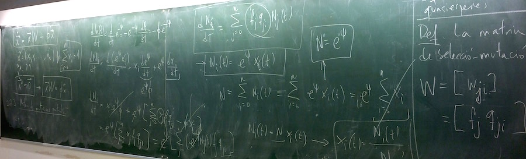
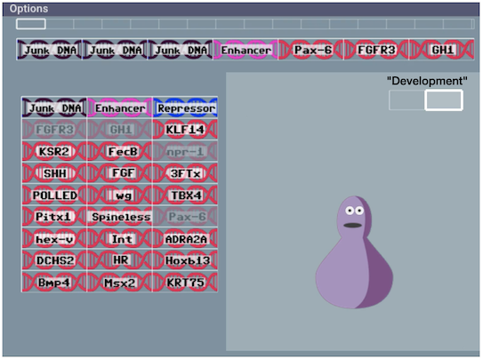

Course materials for our "Introduction to Complex Networks" course at the Universitat de València are available here.
These lessons are supported by Netlab, an online environment designed by Sergi Valverde for modeling complex networks, allowing students to simulate the evolution of these networks.

Teaching is a vital component of scientific research. Dr. Sergi Valverde taught in the Degree Program of Biomedical Engineering (courses 22106, 22107, 22117, 22123) and the Degree in Human Biology (course 20332) from 2008 to 2020, with a focus on complex systems (using NetLogo), computational simulation (Matlab/Octave), and evolutionary algorithms. Through these courses, students learned how to solve engineering problems by programming computers to simulate natural evolution.
Evolutionary algorithms are particularly relevant for both practical and theoretical reasons. Practically, they are highly cost-efficient in optimizing complex systems with a large number of variables. Theoretically, students learn how to approach real-world challenges through an evolutionary perspective. Evolutionary algorithms also have numerous applications in bioengineering, such as optimizing parameters in biological circuits.

Knowledge of evolutionary and ecological principles is often inadequate, yet these principles are essential for understanding biological and cultural phenomena. Learning evolutionary theory involves grasping abstract and challenging concepts, such as probability and complexity. To address these challenges, we developed Biocreator, a web-based simulation that helps students understand complexity in an evolutionary context.
Biocreator allows students to create and test synthetic designs. Students can edit the genomic sequence of synthetic organisms (real gene names are used) and explore complex genotype-phenotype mappings. These synthetic designs can then compete in a virtual ecosystem (contact us if you are interested in a demo). Biocreator enables students to apply their understanding of evolution and ecology in a practical way. You can explore Biocreator here.
Valverde, S., Vidiella, B., and Vila, R. (2022) "Biocreator: a distributed simulation for learning ecology and evolution" (submitted).
Course materials for the Summer Course 2017 are available online.